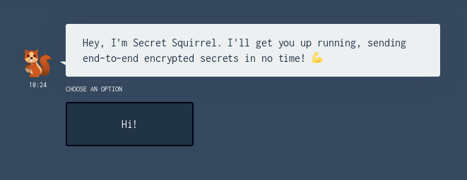

14 December 2018
Protecting liberty by simplifying security
Recap: With Fluidkeys, you can send end-to-end encrypted secrets from the command-line, with all the power of OpenPGP and none of the hassle.
Using Fluidkeys reduces the impact of third-party data breaches, targeted spearphishing attacks and network compromise.
0.2.6 releaseWe were keen to put fk secret send into the world so people can try it out without having to build from source. After a lot of bug bashing and tweaking we released 0.2.6, which is now available through the normal install channels.
We only count 0.3, 0.4 as proper releases so this doesn't count towards our metrics, but it's good hygiene to keep releasing.
We think the AGPL is a good choice: it sends a strong signal that we're committed to software freedom, while giving us good options for building a service business model.
For our upcoming 0.3 release we realised we need to be better at guiding new users. For people who aren't that familiar with PGP, it's not obvious what Fluidkeys is, and staring at fk --help doesn't answer that either.
We've been mocking up a few ways of onboarding new people: helping them to discover what Fluidkeys can do by creating a key and actually doing something with it.
Now that we've got fk secret send and fk secret receive we're designing the onboarding around that: some sort of bot you can interact with to show that it's working.
We felt it might work to use a chatbot type interface to get people started.
OK, take a deep breath, and take a look at this mockup:

It was awesome that Ian was able to knock up the mockup in 20 minutes based on some rough docs we came up with.
Ultimately we felt that it comes across a little naff: even if it is a good medium, we can't help thinking about distasteful chatbots made by uncool supermarkets trying to enact their "millennial strategy".
Once we saw it in for real and talked it over, we felt it would be better todo onboarding inside Fluidkeys. So we've started work on fk setup, which will probably have a chattier feel than the rest of the application.
Until next week!
— Paul
All feedback is welcome, pop us an email to hello@fluidkeys.com